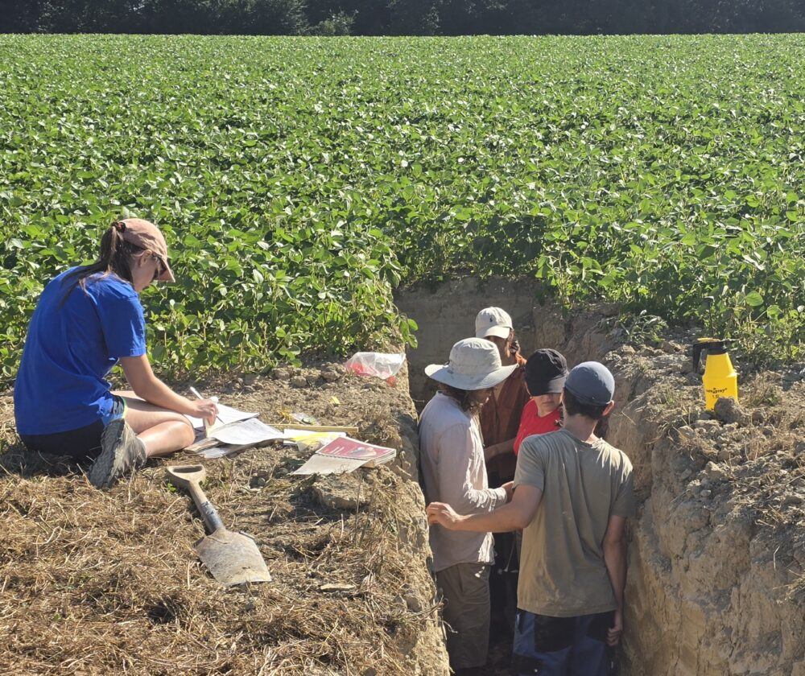
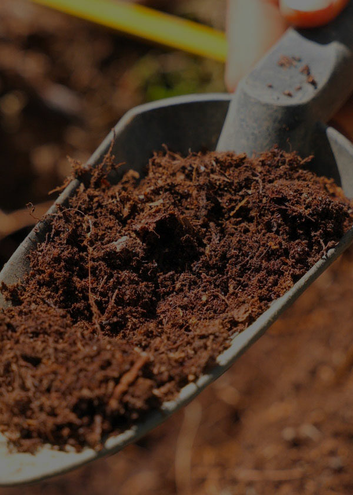
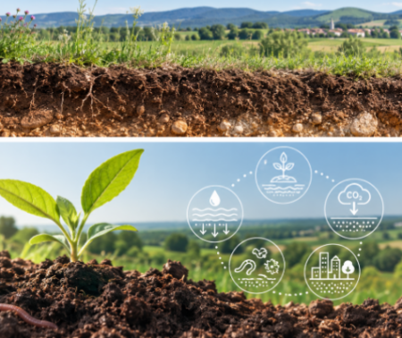

Ce que l'AFES fait vivre
Tous nos projets, au même endroit
Les projets étaient rangés au troisième niveau des menus des trois missions. Ils sont réunis ici : chaque carte indique sa mission et, quand elle existe, la communauté correspondante sur e-Sol.

La Fresque du Sol
50 cartes et 3 h pour comprendre les sols, leurs fonctions et leurs menaces.



Journées d'Étude des Sols
Le rendez-vous de la communauté francophone des sciences du sol.


Réseau e-Sol
La plateforme d’échanges des acteurs et actrices des sols.


Centre de ressources
Les webinaires, présentations et documents mis en ligne par l'AFES.


Référents qualité des sols forestiers
Un réseau national issu du projet IPRSol.



Sur e-SolRéseau e-Sol
Le site présente, e-Sol fait vivre : on y échange, on y partage, on y trouve les annonces de la communauté.
Rejoindre